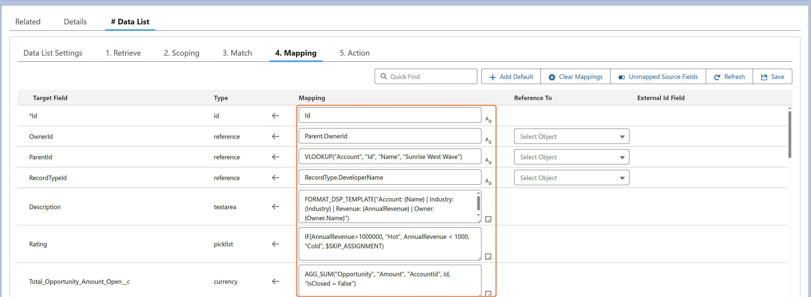

Bulkified transformation is what allows business rules defined for a single record to scale safely across thousands or millions of records — without rewriting logic or hitting governor limits.
In traditional development, bulkification is left to the developer: gather IDs, run queries outside loops, manage collections, batch DML. It's repetitive, easy to break, and a major source of tech debt.
DSP removes that burden. All functions, expressions, and relational references — including aggregations like AGG_SUM and parent traversals like Parent.OwnerId — are bulkified automatically. You define rules as if working with one record, and DSP handles the rest.
Benefits:
In short: Bulkified transformation is essential for enterprise scale — and DSP makes it effortless.
